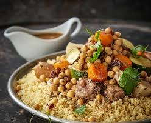

Couscous Royal
Un plat complet, généreux et plein de saveurs maghrébines, parfait pour régaler toute la famille.
Ingrédients :
- 500g de semoule moyenne
- 4 merguez
- 4 morceaux de poulet
- 300g d’agneau
- 2 courgettes
- 2 carottes
- 2 navets
- 1 oignon
- 200g de pois chiches
- Concentré de tomate, ras el hanout, huile d’olive, sel, poivre
Préparation :
- Faire revenir la viande et les oignons dans une marmite avec un filet d'huile d'olive.
- Ajouter les légumes coupés, les pois chiches, les épices et le concentré de tomate. Couvrir d’eau.
- Laisser mijoter 45 minutes à feu doux.
- Faire cuire la semoule selon les indications du paquet.
- Griller les merguez à part.
- Servir la semoule, la viande, les légumes, les merguez et un peu de bouillon bien chaud.
← Retour à l'accueil